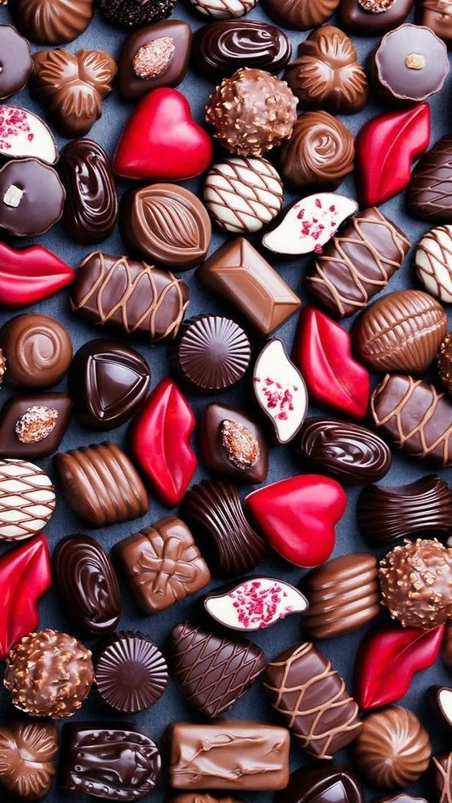

|  |
|
Первые конфеты в том понимании, в котором мы знаем их сегодня, приготовил Плесси Пралин в 1671 году. Для маркиза он подал шоколадные конфеты с начинкой из тертых орехов, которые назвал «пралине». С выращиванием и переработкой сахарного тростника стоимость сахара стала снижаться. Появились первые леденцовые конфеты из расплавленного сахара с ягодными и фруктовыми соками. Латинский термин canna mela означает «сахарный тростник». Появилась сливочная помадка на основе смеси сахара, молока и масла, а также драже – цукаты и орехи в сахарной глазури. В 18 веке в Париже кондитерское дело приобретает черты искусства. Можно экспериментировать не только с составом конфет, но и с формами, делая из них настоящие произведения искусства. Появляются новые начинки – алкогольные, а также грильяж из обжаренных орехов, мармелад, марципан, привезенные из Италии. Появляются первые картонные упаковки для конфет – бонбоньерки (bonbon – «конфета» по-французски) в форме медного или серебряного сундучка, украшенного хрусталем и драгоценными камнями для подарка в богатых домах. Коробки попроще, из картона, было принято дарить гостям на свадьбах. В них обязательно клали 5 конфет – на здоровье, долголетие, достаток, удачу и радость. Эта традиция существует во Франции до сих пор. Шоколадные конфеты, как мощный афродизиак, преподносился на свадьбу молодоженам перед первой брачной ночью. В разных странах стали появляться свои «национальные» конфеты. Англичане и американцы готовили лакомства из лакрицы, немцы – из желе, а итальянцы – из нуги. Славянские народы также издавна варили сезонные фрукты в меду и подавали лакомство на праздничный стол, а вот клюкву и малину просто обваливали в сахарной глазури. В 19 веке англичане перестали поставлять сахар во Францию, и Наполеон, большой почитатель сладостей, приказал найти выход из положения. Так стали выращивать сахарную свеклу, из которой производили сахар и патоку и использовали их для приготовления сладостей. Свекла отлично прижилась и на наших землях потому со временем конфеты стали доступны всем слоям населения – карамельки и леденцы продавались в аптеках и бакалейных лавках на развес. |